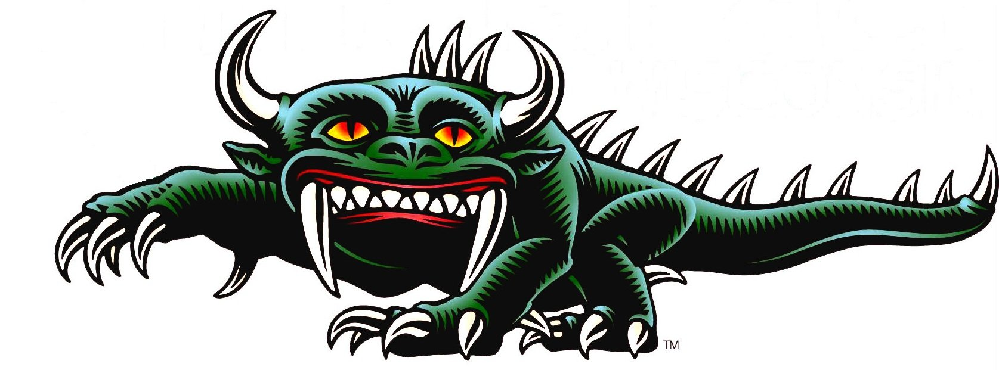
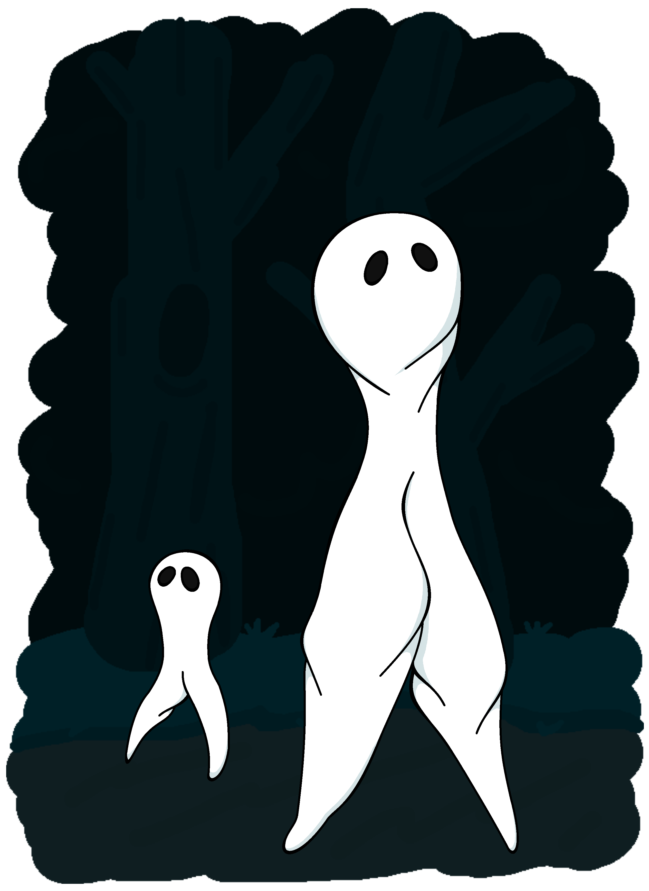
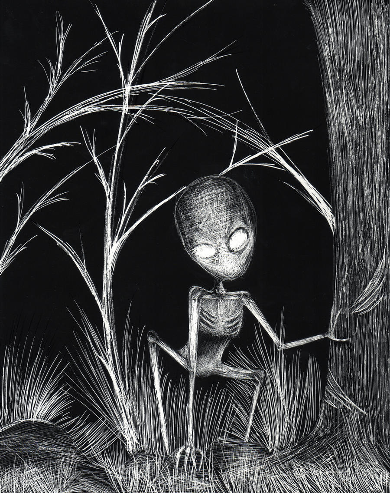
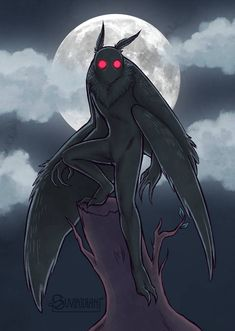
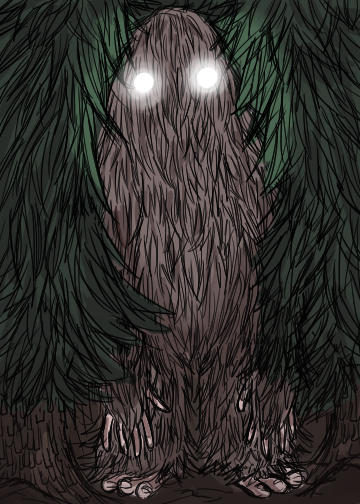
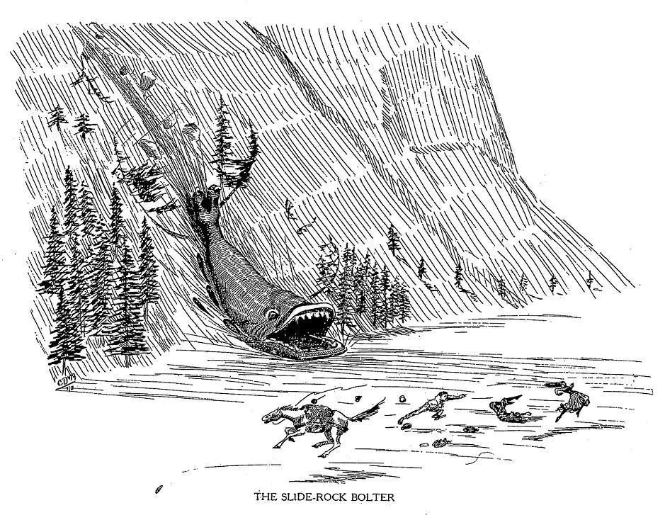
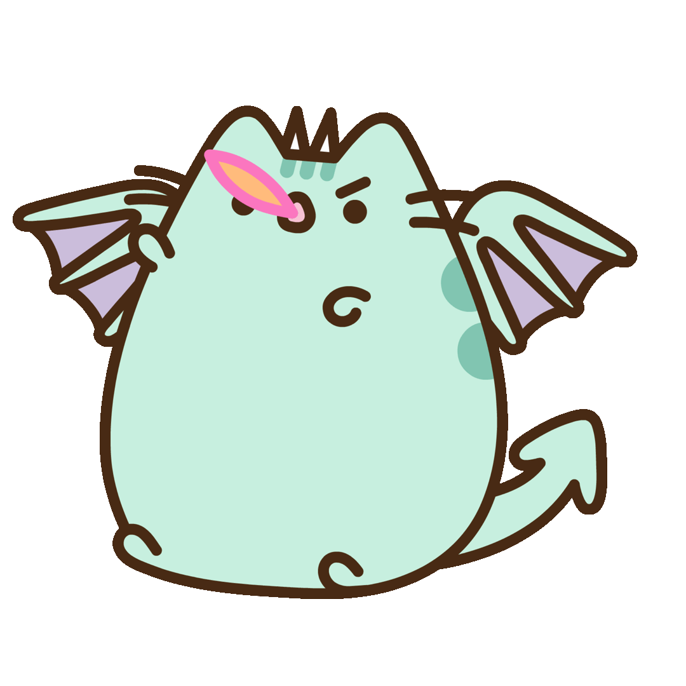

Hodag

The Hodag is said to resemble a large bull-like carnivore with horns and a thick, curved spine. It was said to be born from the ashes of a cremated oxen. Some say this is so because it is of the recombination of the abusive suffering animals had endured by their masters. Most claimed discoveries were in the city of Rhinelander, Wisconsin, but the most known story of its discovery/origin is one from Gene (or Eugene) Shepard who "discovered" the creature in 1893 after stumbling into a logging camp. He took a group of lumbermen so they'd capture the beast using dynamite and returned with charred remains. However, Shepard was a prankster who was able to keep up the charade by making snarling and snapping sounds to make it seem like he was fussing with the creature when he was out of sight from viewers. Soon he was part of the county fair circuit with his sons working behind the scenes to make it seem like the Hodag was moving. His scam was successful for years until a reporter came to investigate and eventually led Shepard to admit the truth. Along with the Hodag's origin story, the creature is also prominantly figured in the early Paul Bunyan stories; Paul Bunyan is a giant lumberjack and a folk hero in American and Canadian folklore. The Hodag's ties to Rhinelander is so strong, it is the official symbol of Rhinelander, Wisconsin, named to many businesses and organizations such as the Hodag Country Festival (an annual music festival), and even the mascot of Rhinelander High School.
Fresno Nightcrawlers (also known as the Fresno Alien)

These peculiar white and pants-like crypids are said to be either aliens or spirits caught on video footage in Fesno, California as well as a few other places such as Yosemite National Park in California. They are said to be short creatures with almost all of its proportions being its legs while possessing a very small upper body and no arms; details of its upper body is hard to see from the footage. Its feet are very thin like stilts on top of muscular legs with knees that bend backwards as it walks. The sightings of these creatures dated back in 2010, and the last recent sightings was in 2017. I would say these things are aliens in my opinion.
Dover Demon

These alien-looking creatures were seen in Dover, Massachusetts on April, 1977 by three teenagers. Not much is known about these creatures, but each teenager claimed to have saw one while driving at night, seeing a large-eyed creature with "tendril-like fingers" on top of a broken stone wall. The teenagers drew sketches of the creatures, giving us the only idea of what these creatures looked like. Skeptics, however, assumed it was simply a moose, baby moose or some calf, though others refute this explanation too since it was the wrong time of year for a small moose to be there; in addition, this area was far from the usual moose habitat. Therefore, the calf explanation seems more logical, though, in my opinion, this doesn't explain the tendril-like fingers.
Mothman

This humanoid moth creature is the staple in West Virginia folklore from its sightings one Point Pleasant in November 1966 by a couple and after a bridge collapse in December, 1967. Ironic to its name, those that described him said he was more like a humanoid owl instead of a moth... why name him the mothman then? He's said to be about 7 feet tall, with a large wingspan of 10-15 feet or more with huge red glowing eyes. His colorations varies from black to gray and even darker shades of brown. There are a lot of explanations about the nature of the mothman, including ones said he may be an angel, demon or something from a blood curse.
Wood Devils

These sasquatch-like creatures are said to roam our wonderful New Hampshire forests, specifically in Coos Country. They are said to be at least 7 feet tall and very thin while covered in gray fur. They're supposedly elusive creatures able to be fast and nimble in order to move from one tree to another. Sightings of it are said to go as far back as the 1900s, but the earliest recordings of it was during the spring of 2000 and another during Novemeber in 2004. During the 2004 sighting, it was said that when the man hunting with his grandfather heard a horrific squeal, they later came upon the mosnter, thus associating such a sound with the creature.
Urayuli (also known as the Hairy Man)

Within the southwestern woodlands of Alaska are these shaggy haired creatures who have long, lanky arms and glowing eyes while towering at 10 feet tall; they are also known to emit a high pitch cry like that of a loon while residing in the forests near Lake Iliamna. They are said to be peaceful creatures unlike the Kushtaka of Southern Alaska (shape-shifitng otters from Alaskan lore) and unlike the Hairy Men which are sometimes assumed to be the same as the Urayuli but more aggressive. Apparently the Urayuli are transformed children who became lost in the woods.
Slide Rock Bolter

These uh... mountain fish are fearsome creatures that slide down the steep slopes of the Colorado mountains and gobble up everything in its path including people. Sightings of it by lumberjacks date back during the 19th and 20th century. It has an huge head and mouth yet small eyes. It's small tail possess large hooks used to hold onto the mountain's ridge so the creature remains still as it waits for days on end until it sees plenty of tourists in which it'll then unhook its tail, slide down, and gulp up its victims.
Sources:
32 Creatures From American Folklore - Parade.comCategory: American Legendary Creatures - En.wikipedia.org
Hodag - wisconsinlife.org
Fresno NightCrawlers - cryptidz.fandom.com
Dover Demon - cryptidz.fandom.com
Mothman - cryptidz.fandom.com
Wood Devils - obscurban-legend.fandom.com
Wood Devils - rabrewster.com
Urayuli - cryptidz.fandom.com
Slide Rock Bolter - cryptidz.fandom.com
